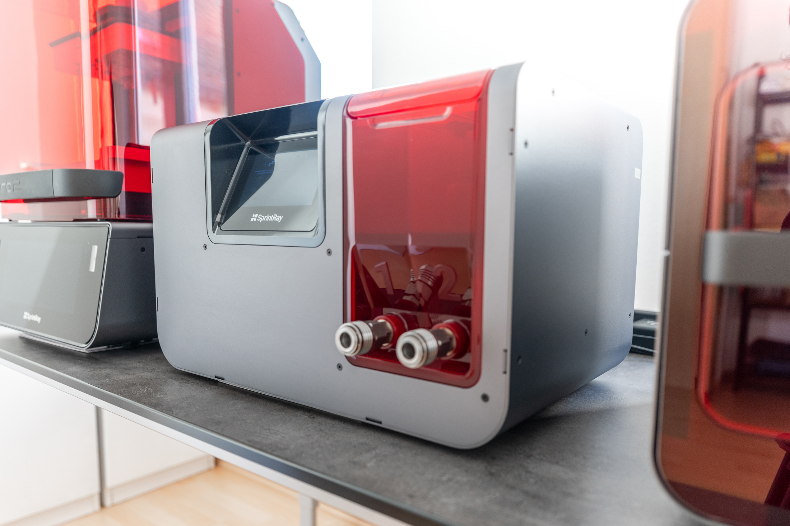
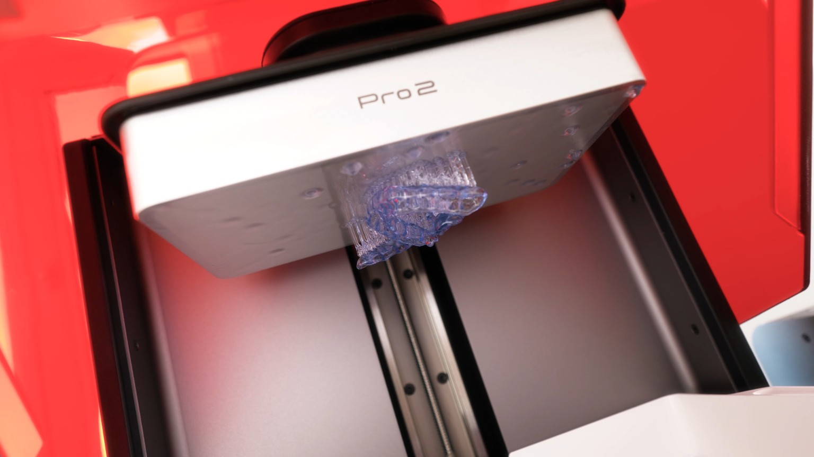

Digital 3D-Printed Night Guards
Precisely made, individually fitted, quickly available — for bruxism and nighttime teeth grinding.

Digitally planned. Precisely made. In many cases in less than 2 days.
Grinding and clenching can put significant strain on teeth, dental restorations, muscles, and jaw joints. An individually made night guard helps protect your teeth from this strain.
To do this, we comfortably capture your teeth with a digital 3D scan — no traditional impression needed. We then digitally plan your guard and fabricate it directly in our practice with our SprintRay Pro 2 3D printing system.
Your night guard in four steps
Thanks to this fully digital workflow, we can work with particular precision and efficiency — in many cases, your individual night guard is ready in less than 2 days.

You might also be interested in
Ready for the next step?
Schedule your appointment at EDEL SMILE in Munich Trudering.
Book Appointment